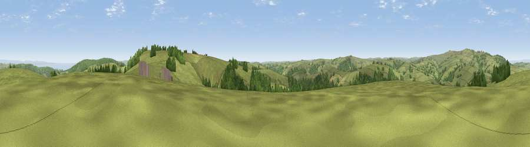

Viewpoint near Wheddon Cross
#7539 in England · top 19% of its area beats it · near Wheddon Cross · path 150 mWhere it is
The exact computed spot (SS 92912 37525). Click the marker for map links.
Public access: the nearest public right of way is about 150 m away — the final stretch may cross private land. Computed from Natural England's CRoW access layer and OpenStreetMap rights of way — not the legal definitive map. Always verify locally.
The view, rendered

A 360° render of this exact spot computed from the terrain model, tree cover and land cover — summer colours, afternoon light, calibrated against photographs of famous viewpoints. Real trees, hedges and buildings will differ in detail.
The panorama
Grey silhouette: terrain skyline in each direction (720 bearings, Earth curvature and refraction included). Dashed green: skyline with trees (+15 m) and buildings (+8 m) as obstacles. Blue strip: how far the ground is visible on each bearing.
Where the view opens
Wedge length = distance to the farthest visible ground on that bearing (vegetation-aware). Rings at 10, 25 and 50 km.
What fills the view
79% grassland · 17% woodland · 2% cropland · 2% water
Angular shares of the visible panorama (visual magnitude), not map area. Landscape diversity 0.28 (0–1 Shannon).
Key numbers
More beautiful places nearby
The staircase of upgrades: each row has a higher view potential than everything closer. Driving times are estimates from straight-line distance, calibrated against real road routing — check an actual route before setting out.
| Place | Direction | Drive | Score |
|---|---|---|---|
| Viewpoint near Luxborough | E · 2 km | ~6 min | 73.5 |
| Viewpoint near Luccombe | NNW · 5 km | ~12 min | 78.7 |
| Viewpoint near Luccombe | NW · 6 km | ~12 min | 84.5 |
| Viewpoint near Luccombe | NNW · 6 km | ~12 min | 84.6 |
| Viewpoint near Luxborough | ENE · 7 km | ~14 min | 85.5 |
| Viewpoint near Minehead | N · 10 km | ~19 min | 86.2 |
| North Hill | N · 10 km | ~19 min | 86.3 |
| Selworthy Beacon | N · 10 km | ~20 min | 88.7 |
51.12696, -3.53168 · source: screening · position refined by local search. Computed location — check access rights before visiting.